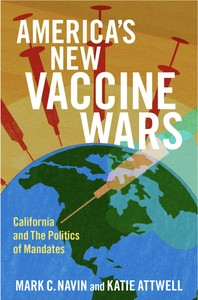
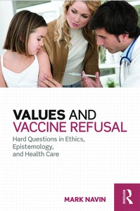

Research
Books


Edited Volumes
-
Education, Inclusion, and Justice
-
Democracy, Populism, and Truth
-
Core Concepts and Contemporary Issues in Privacy
Vaccine Ethics, Policy, and Public Health
I study the ethics and politics of vaccination. My work examines how governments should design vaccine mandates, how exemption policies shape public health outcomes, and why people refuse vaccines. I have written about these questions in the United States, Australia, and Europe, often in collaboration with political scientists, pediatricians, and public health researchers. My first book, Values and Vaccine Refusal (Routledge, 2016), took seriously the epistemic and ethical concerns of vaccine-refusing parents. My second, America's New Vaccine Wars (Oxford University Press, 2023, with Katie Attwell), examined the political dynamics of the elimination of nonmedical exemptions.
Selected Publications
-
"Vaccine Policy and Eliminating Nonmedical Exemptions — Read the Room"
-
"America's Vaccine Policy Whiplash — Finding the Way Forward"
-
"No Vaccine, No Organ? Ethics of Vaccine Mandates for Pediatric Transplant"
-
"Eliminating Nonmedical Exemptions: A Radical Shift in How Childhood Vaccine Mandates Govern"
-
"Mandatory Vaccination: Scope, Sanctions, Severity, Selectivity, and Salience"
Clinical Ethics
I work as a healthcare ethics consultant at a large hospital system, and my scholarship in clinical ethics grows from that practice. I write about pediatric decision-making: when parents can refuse treatment for their children, when clinicians should override those refusals, and what role children's own preferences should play. I have also written about surrogate decision-making capacity, conscientious objection by clinicians, and the ethics of treating patients over their objection.
Selected Publications
-
"Limits on Parental Discretion in Medical Decision-Making: Pediatric Intervention Principles"
-
"Three Kinds of Decision-Making Capacity for Refusing Medical Interventions"
-
"Treatment Over Objection — Moral Reasons for Reluctance"
-
"Capacity for Preferences and Pediatric Assent: Implications for Pediatric Practice"
Philosophy of Public Health and Medicine
Some of my work is more theoretical. I have written about the moral significance of herd immunity, arguing that reciprocity and vulnerability ground obligations to vaccinate that go beyond standard public goods arguments. I have examined how social epistemology can explain vaccine denialism without dismissing vaccine skeptics as irrational. I have also written about the ethics of exogenous boosting and chickenpox policy. This work draws on political philosophy, epistemology, and moral theory to address questions that arise in public health.
Selected Publications
Social and Political Philosophy
My earliest work was in social and political philosophy. I have published on conscientious objection, food sovereignty, global justice, and the relationship between luck and oppression. This work shares a through line with my bioethics research: I am interested in how political institutions mediate between individual liberty and collective obligations.
Selected Publications
Nursing Ethics
I completed my BSN in 2025 and became a licensed registered nurse in 2026. I am building a research program at the intersection of nursing and public health ethics. My published work in this area examines the roles that nurses and school health staff play in immunization governance, including how they communicate with families and how they navigate mandates they may not fully support. My current projects address the division of moral labor between nurses and physicians, paternalism in nursing practice, informed consent as it applies to bedside care, and the Kantian foundations of nursing ethics.
Selected Publications
For a complete list of publications, see my CV.